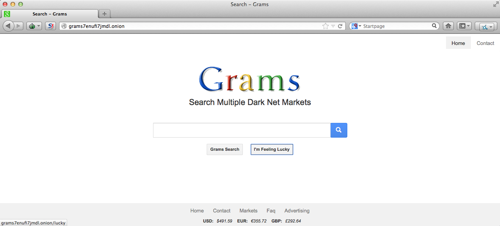

Grams: Navegador de busca na Deep Web(){
Notícias
Por: Caroline Barcelos Gonçalves
Em abril de 2014 foi lançado o Grams, um site de busca semelhante ao Google, utilizado para buscas na Deep Web. Como é um site para a Deep Web, só pode ser acessado através do navegador Tor (Vide seção i++) por meio do endereço http://grams7enufi7jmdl.onion/. O Grams indexa informações que foram permitidas serem incluídas nas pesquisas de vários mercados na Deep Web. O site tem algumas semelhanças com o Google, a começar pelas cores do logo.

- Porque ele é tão importante?
O que torna o Grams tão inovador é que antes era necessário saber especificamente para onde você gostaria de ir: muitos sites só estavam disponíveis para quem sabia a URL exatamente, porque não havia como fazer buscas específicas como estamos acostumados no Google, por exemplo. Acredita-se que ele é o primeiro site de busca que é capaz de pesquisar em vários sites simultaneamente na Deep Web. Gramsadmin, pseudônimo pelo qual o desenvolvedor do Grams atende para manter a privacidade, disse em um bate-papo à Wired que percebeu que nos fóruns e reddit as pessoas constantemente perguntavam onde poderiam obter determinado produto, que mercado tinha o melhor produto ou o mais confiável e então decidiu tornar mais fácil para as pessoas encontrarem o que desejavam na Deep Web e descobrir se era um vendedor de confiança.
- Quais funcionalidades?
O Grams conta, segundo a Wired, com um botão de "Estou com sorte" e recursos que possibilitam aos usuários filtrar resultados que não desejam ver. O site está na versão beta e muitas atualizações tem sido realizadas pelo GramsAdmin. Em uma nota há mais ou menos 1 mês o autor disse que acrescentou ao sistema funcionalidades como: atualizações do preço do bitcoin (moeda virtual) a cada 5 minutos, ordenar as buscas por relevância, preço ou novos itens, indexação de todos os sites da rede Tor na busca, possibilidade do usuário sugerir um site para ser indexado, buscas ponderadas por um sistema de palavras-chave.
GramsAdmin afirmou estar trabalhando para que o sistema fique ainda mais parecido com o Google, em que haverá um sistema de classificação por pontuação baseado na quantidade de acessos e comentários positivos e transações para que dessa forma o usuário possa ver a melhor lista em primeiro lugar, segundo o autor em um de seus posts. Em outra postagem, afirmou que em breve o sistema vai ter um produto semelhante ao Google AdWords (serviço de publicidade da google) que possibilitará que os vendedores promovam seus produtos.
- Detalhes da implementação:
Sobre a implementação, Gramsadmin disse que codificou sozinho o motor de busca trabalhando 14 horas por dia de trabalho em duas últimas semanas, e que gostaria de contratar um programador que pudesse o auxiliar, entretanto ele acredita ser bastante difícil contratar um bom programador em quem possa confiar e ainda manter o anonimato, disse à Wired.
- Mais informações:
Saiba mais sobre o Grams, atualizações e novas funcionalidades disponibilizadas no reddit do próprio autor: http://www.reddit.com/user/gramsadmin.
Referências:
olhardigital.uol.com.br
www.wired.com
Grams Beta version em www.reddit.com
New Features em www.reddit.com
cir.ca
www.deepdotweb.com
}